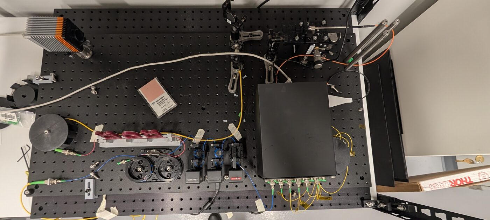

UCF Astrophotonics Lab · CREOL · 2025 – present
Photonic lanterns.
Measuring the wavelength-dependent complex transfer matrix of a photonic lantern by off-axis digital holography.

A photonic lantern couples a multimode fibre to an array of single-mode fibres. Using one for astronomy — feeding starlight from a telescope into single-mode photonic devices — means knowing exactly how light entering each port emerges from the multimode end, in amplitude and phase, at every wavelength of interest. That relationship is the device's complex transfer matrix.
Measurement
The matrix is recovered by off-axis digital holography, extending the approach of Dobias et al., Opt. Express 34(9), 17217 (2026). I align the interferometric bench and acquire holograms of the multimode output for each input port across the C-band, 1525–1575 nm — recovering full amplitude and phase, one row of the transfer matrix per measurement.
Analysis
I implemented the phase-retrieval and mode-decomposition pipeline: FFT sideband isolation and demodulation, a Butterworth low-pass, then joint numerical optimisation of mode-field diameter, defocus quadratic phase and field position. The recovered field is decomposed onto the LP basis to give complex modal amplitude and phase.
Automation
The acquisition chain runs four instruments together — tunable laser, InGaAs camera, fibre switch, and motorised polarisation control — so a complete all-port × C-band sweep runs unattended. Polarisation is optimised in-loop for peak fringe contrast and saturated frames are rejected as they arrive.
Characterized.
What a full transfer-matrix measurement actually takes.
98%
Reconstruction fidelity against simulated fields
50 nm
C-band sweep, 1525–1575 nm, per input port
6 & 7
Port lanterns fully characterized
4
Instruments automated into one unattended run
A full all-port sweep across the C-band used to take days of manual bench time. Now it runs unattended.
Acquisition automation — UCF Astrophotonics Lab, CREOL
Presented.
Supervised by Dr. Stephen Eikenberry, UCF Astrophotonics Lab, CREOL — UCF's College of Optics and Photonics.